Staff · Gesture-like available area
Ảnh chụp giao diện app đang chạy • Expo web 360 × 752 • Dữ liệu kiểm thử cô lập, không phải hồ sơ thật.
Kiểm tra hình học trình duyệt, không phải bằng chứng native Android. Font và vùng hiển thị dự phòng thanh hệ thống là mô phỏng web.
37 ảnh chọn lọc từ lượt chạy đầy đủ chức năng để kiểm tra bố cục. Luồng mới: bắt đầu xử lý, SLA riêng từng Report, phân công đơn vị, liên hệ, tiến độ, tải minh chứng, gửi kết quả lần đầu và gửi lại sau NeedRework theo Incident. Mọi API đều dùng dữ liệu kiểm thử cô lập. Ảnh minh chứng dùng tệp mẫu, không phải hiện trường thật. Bấm vào ảnh để xem nguyên kích thước.
Tổng quan
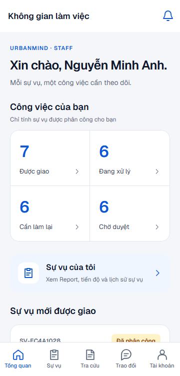
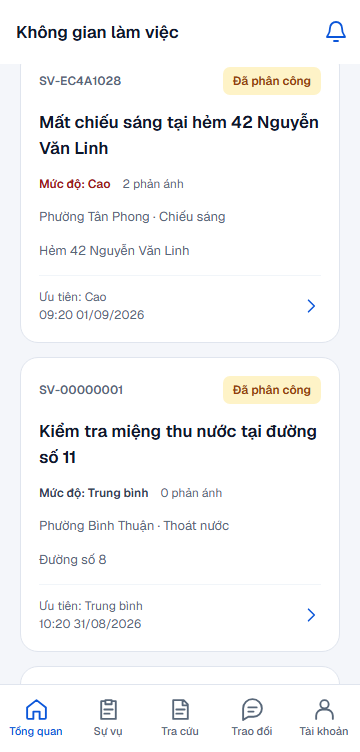
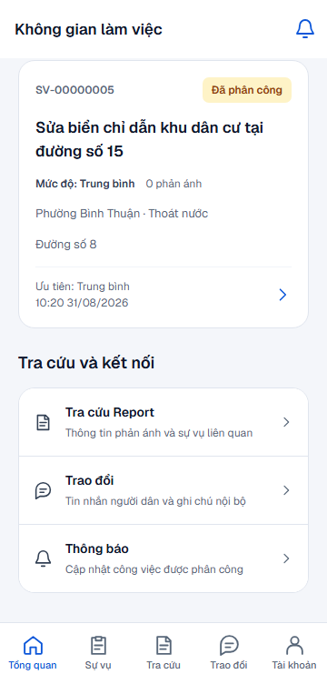
Sự vụ
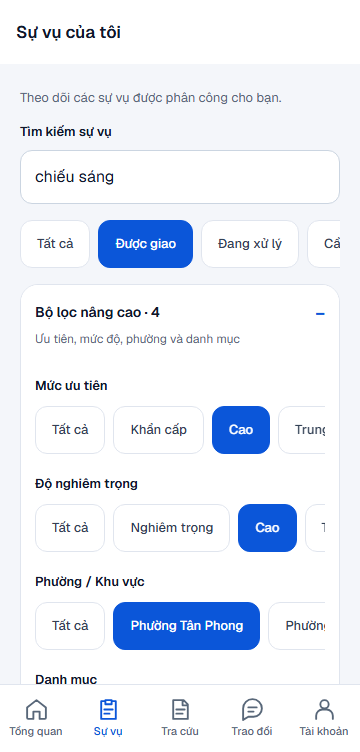
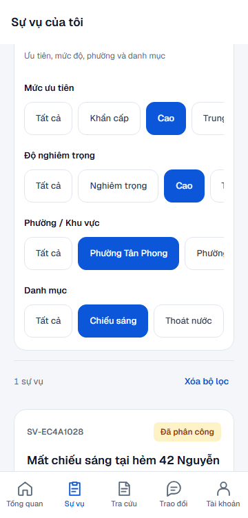
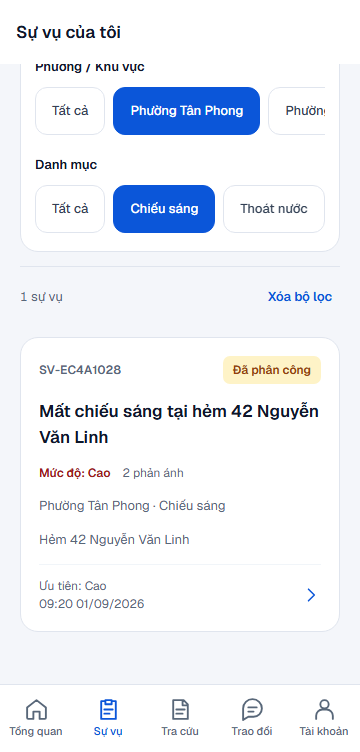
Chi tiết sự vụ
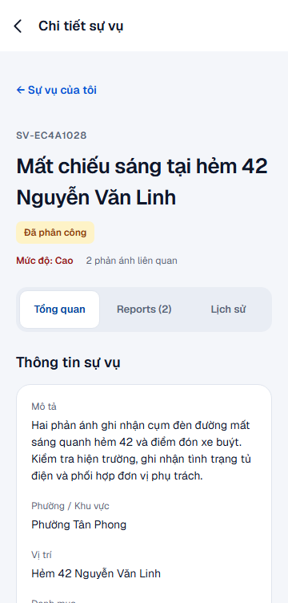
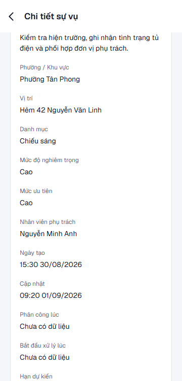
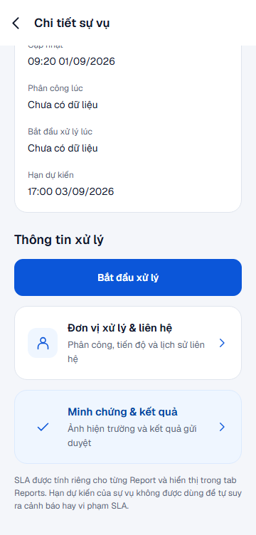
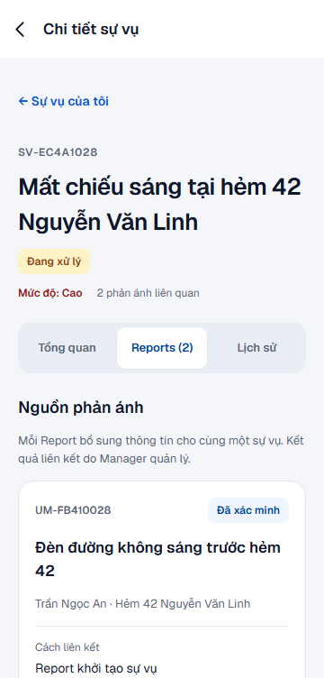
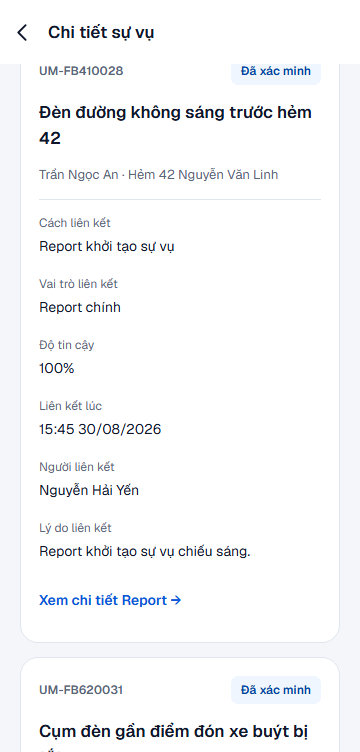
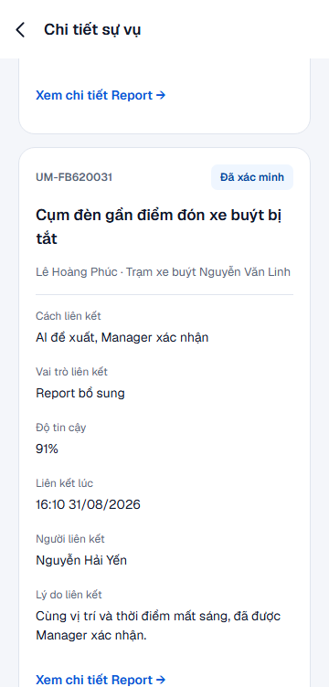
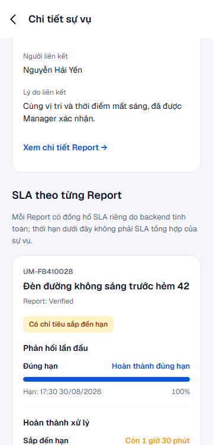
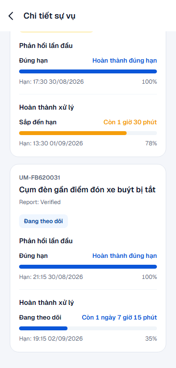
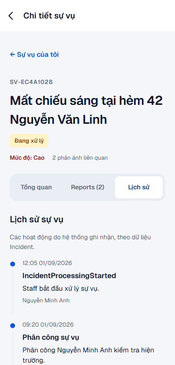
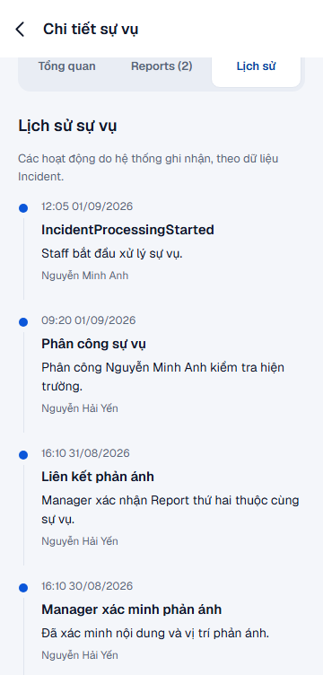
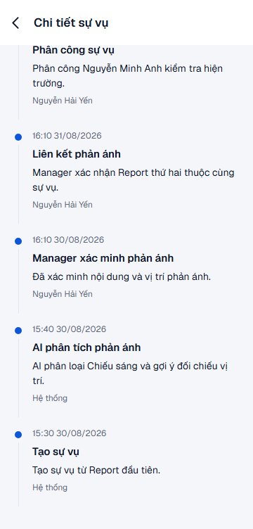
Trao đổi
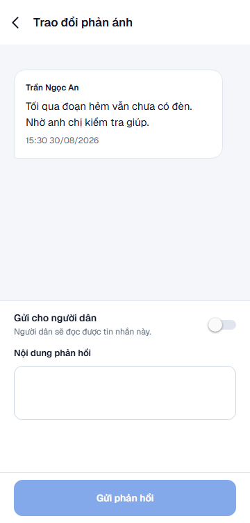
Trạng thái
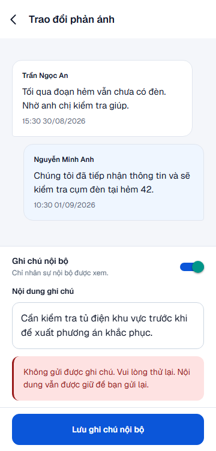
Thông báo
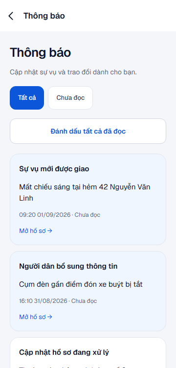
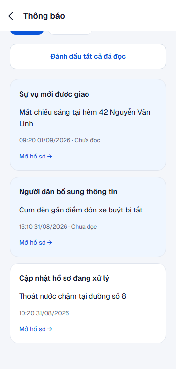
Xử lý sự vụ
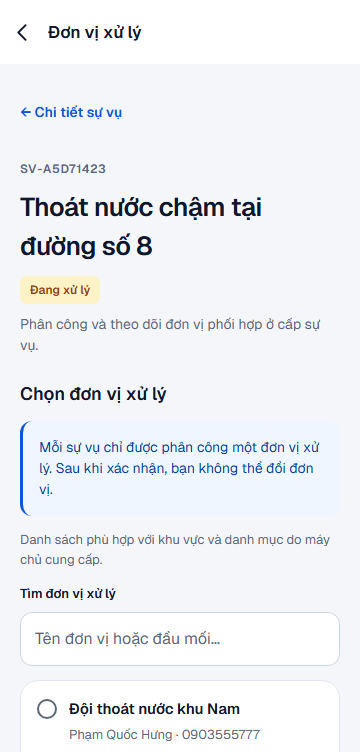
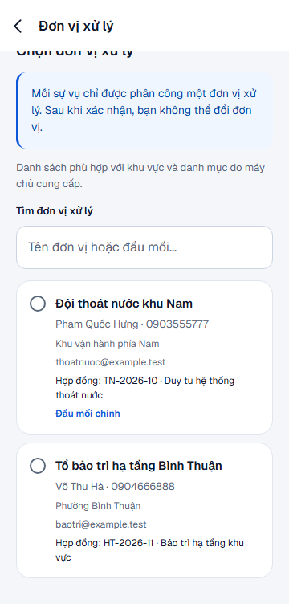
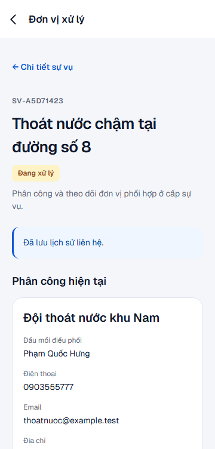
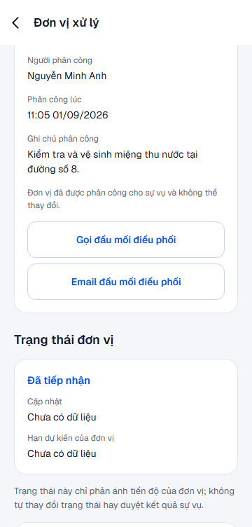
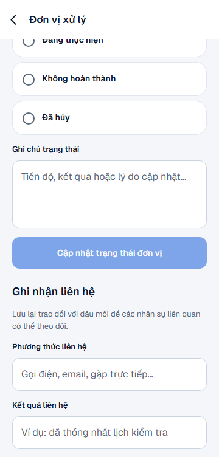
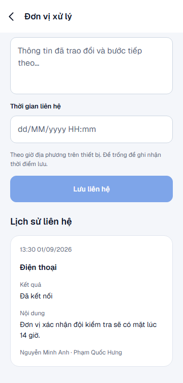
Minh chứng & kết quả
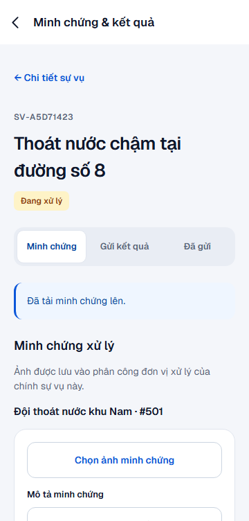
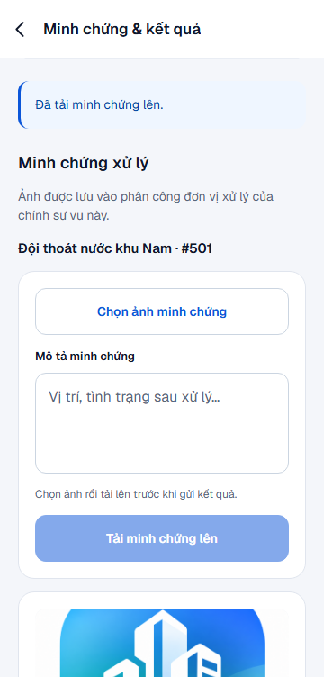
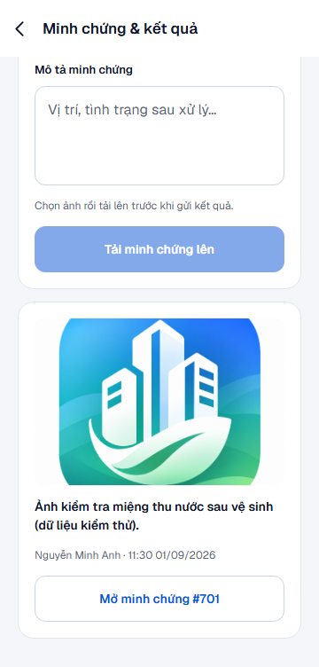
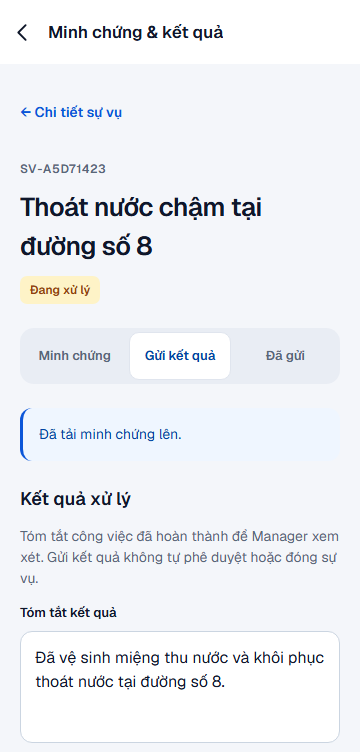
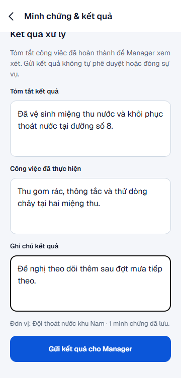
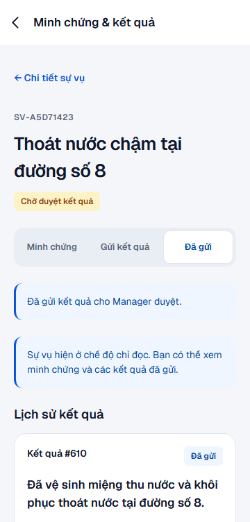
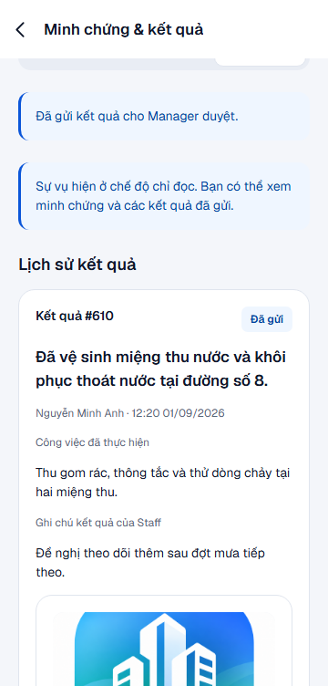
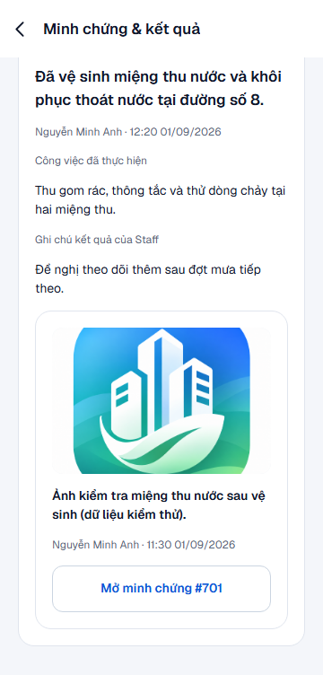
Tài khoản
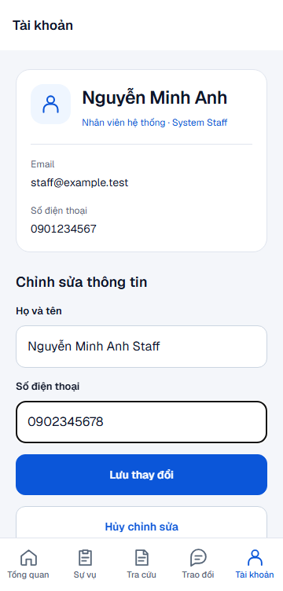
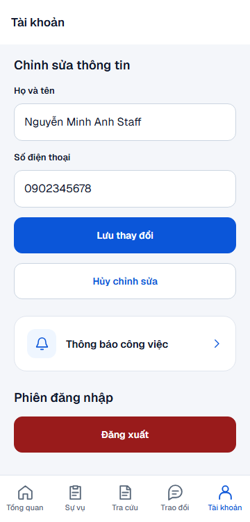